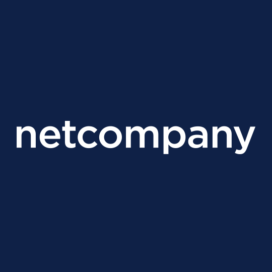

Nguyen Anh Minh

Address: 27/102A1 Điện Biên Phủ, Phường 15, Quận Bình Thạnh, Hồ Chí Minh city
Email: nguyen.a.minh112113@gmail.com
Phone: (+84) 78 540 1999
LinkedIn: linkedin.com/in/minh-nguyen5/
Summary
I'm a proactive self-learning person who loves bridging the gap between the Business side and the Technical side. I have a deep interest in Data-Driven decision making, Automation, and Machine Learning.
My skils
- Programming languages: Python, Java, MySQL
- Technologies : Trello, GitHub, ReactJS, SpringBoot, JUnit4, TravisCI, Docker, Django
- UML Diagrams : Use case, Activity, Class, ERD
Relevant Experience
1. IT Consultant (Remote)
Netcompany · Full-time

Jun 2021 - Mar 2022
Responsibilities
- Read the Software Architecture, clarify, and suggest improvements where appropriate
- Build Sprint Backlog for Epics, User Stories, Tasks, and Bugs
- Code automation processes for Topdanmark, a leading Insurance Company in Denmark
- Assist in software testing when necessary
Achievements
- Completed 1 automation process with the team: Policy cancellation
- Implemented the UI for the next automation process: Pledge
2. Project Member
Organizational Analysis (University project)

Apr 2021 - May 2021
Responsibilities
- Analyze and document the Problem Statement
- Generate solutions for Organizational Structure and Process Model for Implementation
- For more information, please visit this link
Achievements
3. Founding President
RMIT Developer Club
Jun 2020 - May 2021
Responsibilities
- Develop the club's business model & marketing strategy
- Pitch the business strategy to the university
- Research students' event preference
- Research students' time availability
- Organize events
- Find projects & competitions for members
- Handle rumors and internal conflict
Achievements
- 30+ members
- One team placed 11th in Amazon DeepRacer competition (Global)
4. Project Leader
Natural Language Processing chatbot (University project)
Aug 2020 - Jan 2021
Responsibilities
- Facilitate weekly routines as the SCRUM Master for a group of 4
- Analyze and document the Problem Statement
- Perform Literature Review and Market Research
- Document Stakeholder Statement and Project Scope
- Analyze and document Use Cases and overall Activity Diagram
- Design the system (high-level and low-level
- Decide on Software Engineering Methodology, implement and monitor it
- Present the results of the project (Meeting Minutes, UI, Usability tests …)
- For more information, please visit this
link
Achievements
- Attained Distinction for the course
- 3/3 members also attained Distinction
5. Project Leader
Movie Booking System (University project)
Jul 2020 - Sep 2020
Responsibilities
- Facilitate weekly routines as the SCRUM Master for a group of 5
- Elicit requirements and document User Stories with the Product Owner
- Build and prioritize Sprint Backlog for User Stories, Tasks, and Bugs
- Create Sprint Planning notes and Testing Plan for the product
- Document SCRUM artifacts (Trello Board, Git repository, meeting minutes, retrospective notes, burndown chart)
- For more information, please visit these links:
Phase 1,
Phase 2,
Phase 3.
Achievements
- Attained High Distinction for the course
- 4/4 members also attained High Distinction
6. Project Leader (Remote)
COVID19 statistical analysis (University project)
Mar 2020 - May 2020
Responsibilities
- Facilitate weekly routines as the Project Leader for a group of 4
- Perform Regression to identify biggest contributing factors leading to COVID19 deaths
- Analyze and identify the most impacted region out of two given regions
- Perform Time Series analysis to predict future trends of the COVID19 pandemic
- For more information, please visit this
link
Achievements
- Attained Distinction
- 3/3 team members also attained Distinction
- The prediction was accurate in real life
7. Project Leader
Single Player strategy game (University project)
Nov 2019 - Jan 2020
Responsibilities
- Facilitate weekly routines as the SCRUM Master for a group of 4
- Gather the overall requirements of the system (purpose, intended audience, scope)
- Break down overall requirements into Functional Requirements
- Identify system use cases and build Use Case & Activity Diagrams
- Research and specify Non-functional Requirements for the system
- Specify detailed Software Design in terms of Class & Object Diagrams
- Generate Project Schedule and overall testing plan
- For more information, please visit these links:
Phase 1,
Phase 2.
Achievements
- Attained Distinction for the course
- 3/3 members also attained Distinction
8. Workshop Facilitator Technology Day
RMIT University Vietnam
Aug 2019
Responsibilities
An intruder alert IoT project for beginners using Raspberry Pi.
9. Project Leader
Tiki UX analysis (University project)
Feb 2019 - Mar 2019
Responsibilities
- Facilitate weekly routines as the SCRUM Master for a group of 4
- Prepare tasks, scenarios, and follow-up questions for Usability Testing
- Perform Usability Testing on Tiki and analyze the findings
- For more information, please visit these links:
Preparation Document,
Analysis report.
Achievements
- Attained Distinction for the course
- 3/3 members also attained Distinction
10. Teaching Assistant
Illinois Institute of Technology
Jan 2015 - May 2015
Responsibilities
- Held programming tutorial sessions
- Mark students' assignments & supervise final lab test
Skills
- Fluent in Vietnamese, English
- Programming languages: Python, Java, MySQL
- Technologies: Trello, GitHub, ReactJS, SpringBoot, JUnit4, TravisCI, Docker, Django
- UML Diagrams: Use case, Activity, Class, ERD, Algorithm
- 2.5 years leading university projects, both Technical and Business
- Goal-oriented, customer-centric personality
- Can handle difficult team members
- Can handle global team via online communication
Education
RMIT University Vietnam
Bachelor's degree, information Technology
Oct 2018 - Jun 2021
GPA: 3.26/4
Activities & societies: RMIT Developer Club
For more information, please visit these links:
Testamur,
Academic Transcript.
Co-curricular Activities
- Facilitated Singapore YMCA events, such as: fundraising, logistics, …
- Taught English to a primary school class (approximately 40 students) in Cồn Hô.
- Teaching Assistant in Illinois Institute of Technology.
- Founding President of RMIT Developer Club.
Other interests
- Human behavior research
- Data-driven decision making
- E-sports
- Music for spirituality